zuletzt aktualisiert am 16. Oktober 2014 um 00:50 Uhr
Eckis Nachlass – Taschen
Bitte auf die Bilder klicken, um sie in groß zu sehen!
Tasche 260: Alukoffer; wird bis zur Auseinandersetzung des Erbes noch gebraucht
Tasche 261: Aktenkoffer; wird bis zur Auseinandersetzung des Erbes noch gebraucht
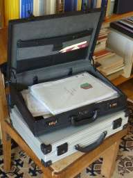Tasche 276: Kühltasche für ein Sixpack Bier; RecyclingBörse
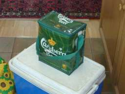Tasche 277: Kühlbox fürs Auto; RecyclingBörse
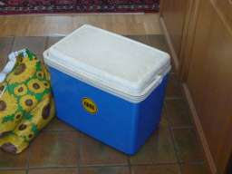Tasche 278: Kühltasche; RecyclingBörse
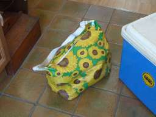Tasche 279: Rucksack; RecyclingBörse
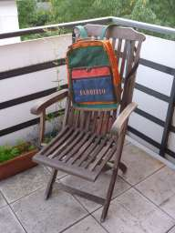Tasche 280: lederne Aktentasche; RecyclingBörse
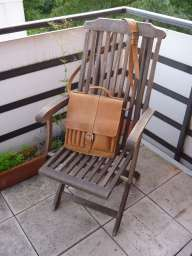Tasche 281: Fototasche; RecyclingBörse
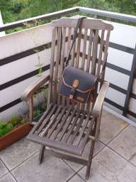Tasche 283: Ledertasche; RecyclingBörse
Tasche 285: Reisesack mit Reisverschluss; RecyclingBörse
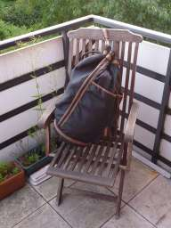Tasche 287: leichter Reisekoffer auf Rollen; RecyclingBörse
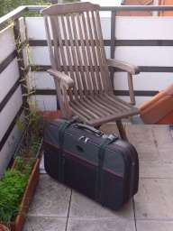Tasche 367: Korb; RecyclingBörse
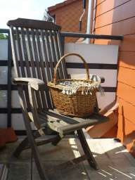Tasche 368: kleiner Lederkoffer mit Schlüssel; RecyclingBörse
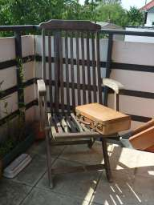Tasche 376: Schutzhülle zum Transport von zwei gebügelten Anzügen; RecyclingBörse
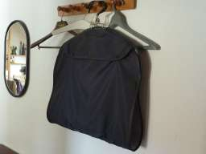Tasche 377: siehe 376
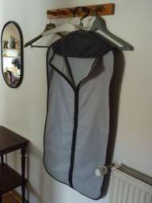
{kind=link}
{kind=link}
{kind=link}
{kind=link}
{kind=link}
{kind=link}
{kind=link}
{kind=link}
{kind=link}
{kind=link}
{kind=link}
{kind=link}
{kind=link}
{kind=link}
{kind=link}
{kind=link}